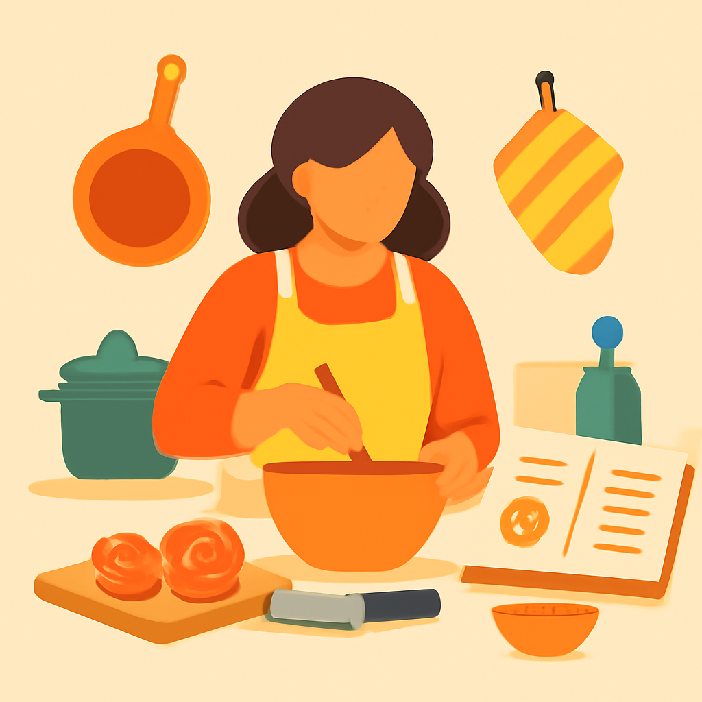

Benchmark de ilustraciones
Tema
openai/gpt-image-1-mini
Inglés de 2º de la ESO
0.005 USD
Inteligencia artificial: qué es y cómo funciona
0.005 USD
Cocina básica: técnicas y recetas esenciales

0.005 USD